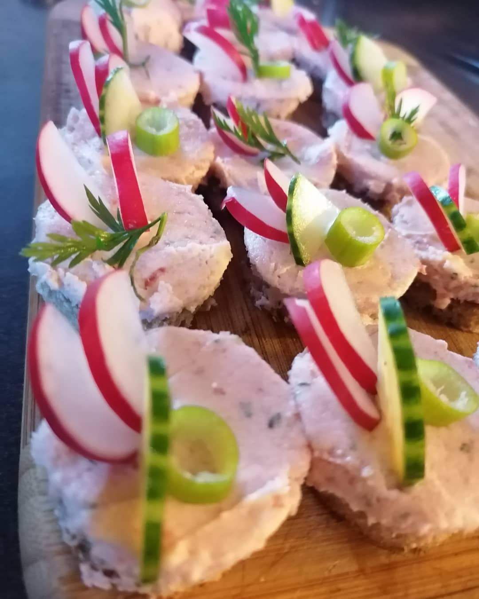

Šunková pena podľa @michal_food_style — Normy Jedál
Home made šunková pena.
Veľmi jednoduché a chutné canapes...
Rozmixujeme 20dkg lahodnej šunky, 2 polievkové lyžičky cream cheese, 20dkg masla, 1 kávovú lyžičku horčice, 2 polievkové lyžice šťavy z uhoriek, dochutíme soľou a čiernym korením.
#canapes #homemade #sunkovapena #jednohubky #easy #ham #foodpics